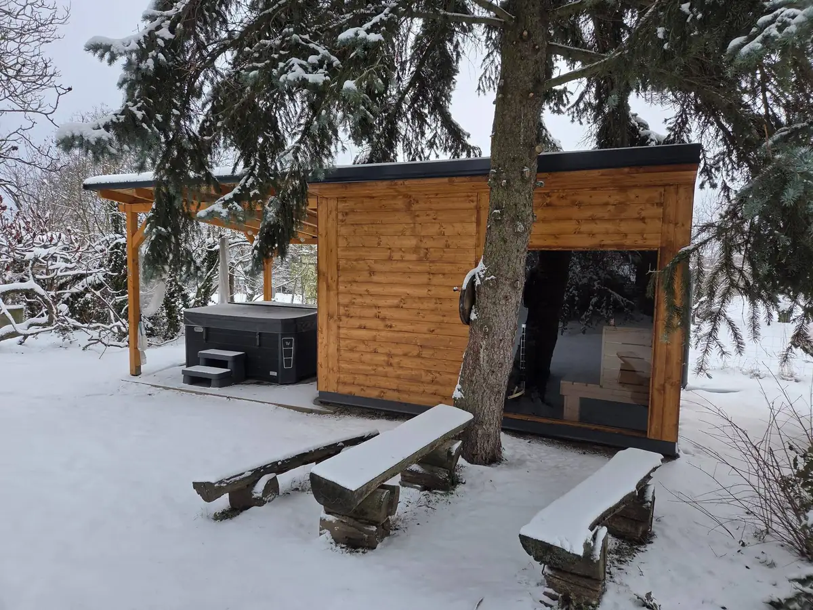
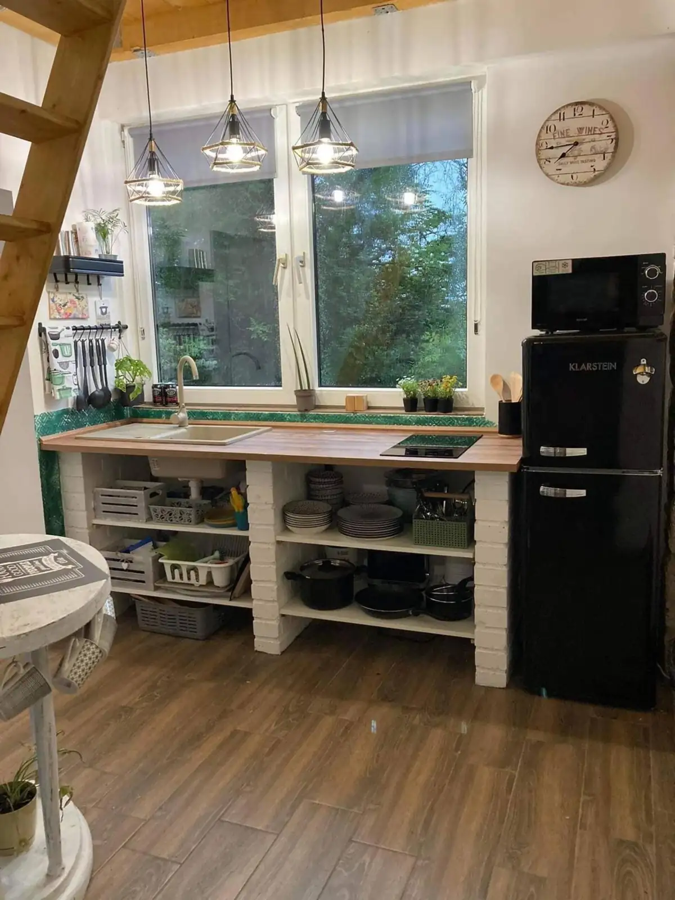
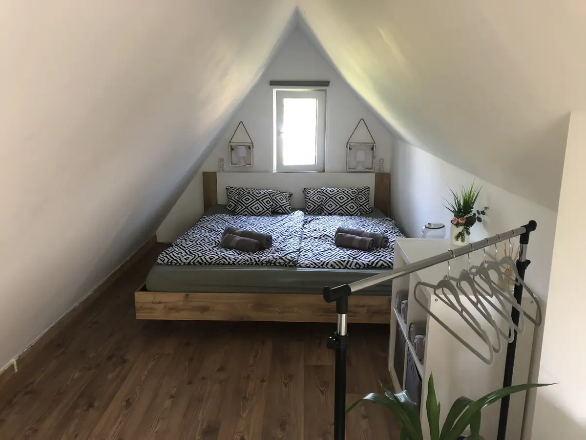
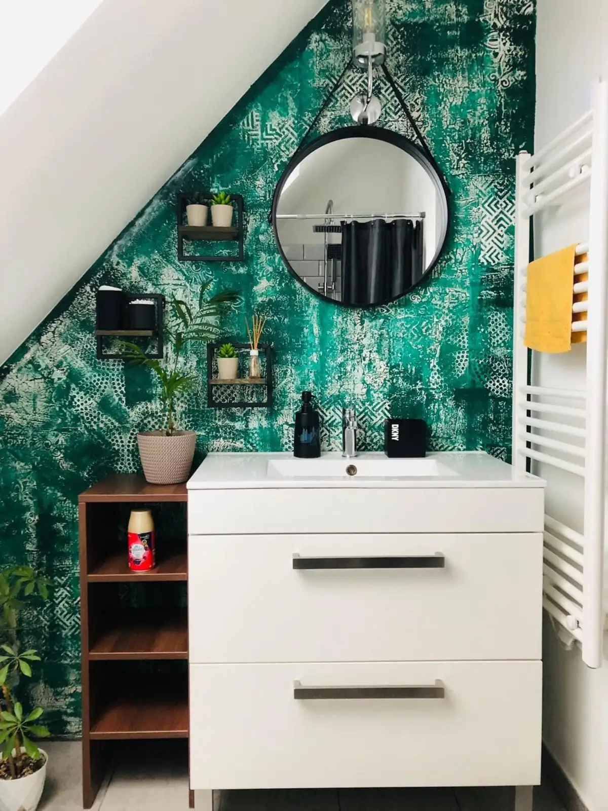
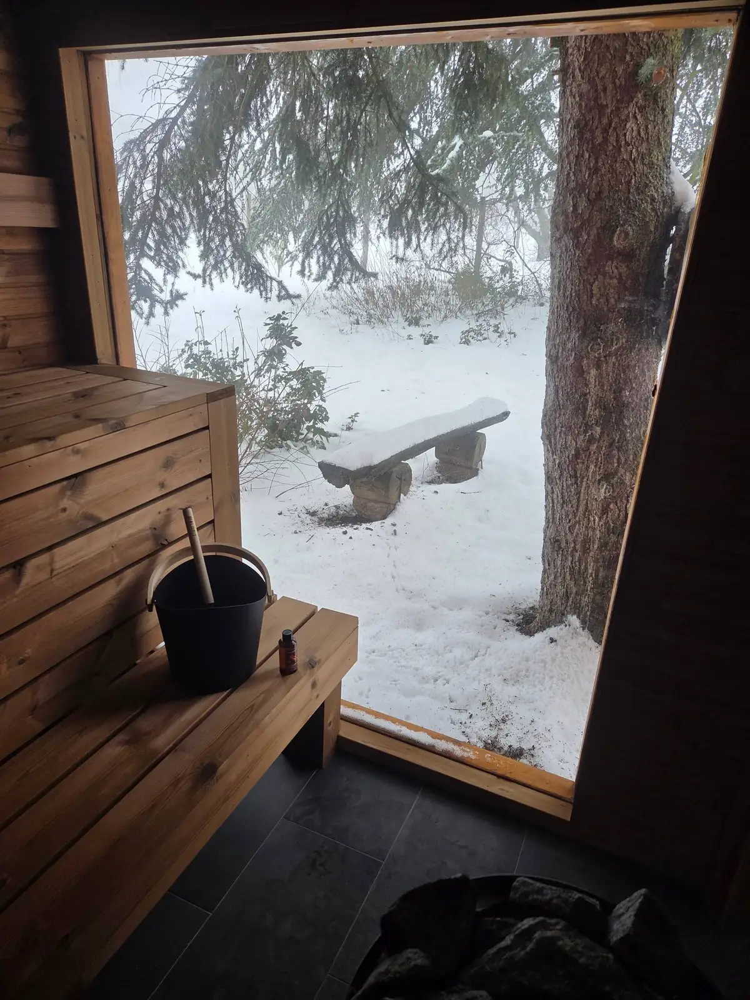
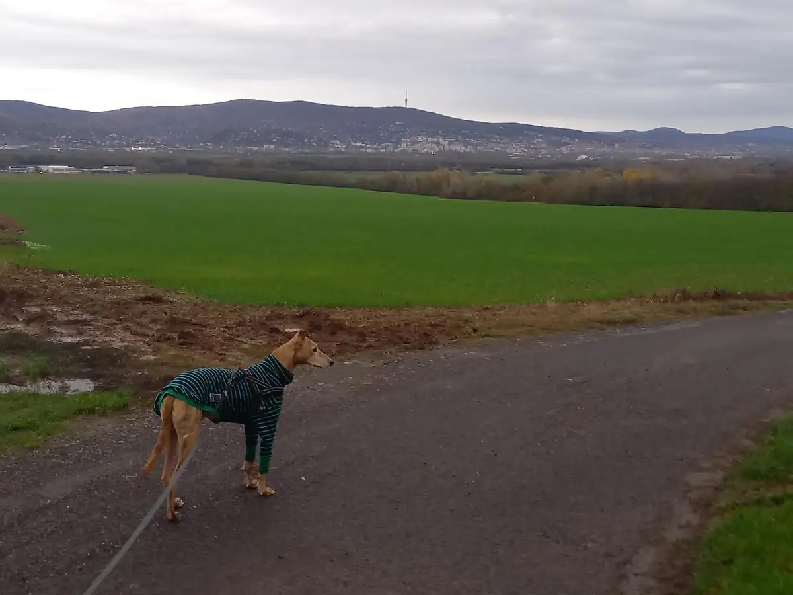

Nappali

A nappaliban kihúzható kanapé is van. Klíma, Wi-Fi és Netflix, télen ég a kandalló.
A teljes házat egyben kapod meg: nappali kihúzható kanapéval, külön konyha, étkező, két hálószoba, fürdőszoba és fedett, privát terasz. Gyódon vagy, Pécstől 5 km-re, a domboldalról a Mecsekre látsz.

A nappaliban kihúzható kanapé is van. Klíma, Wi-Fi és Netflix, télen ég a kandalló.


Külön konyha és étkező, hogy a közös vacsora ne a kanapén legyen.


Két külön hálószoba, a nappalival együtt legfeljebb 8 vendégnek.

Egy fürdőszoba, zöld mintás fallal és kerek tükörrel.
Mindhárom csak a tiéd, a házzal együtt jár. A jakuzzi egész évben, éjjel-nappal használható.

Legfeljebb 6 főnek, nyáron és télen, nonstop.

Fából épült, az ablakán át a kertet látod.

Fa ég benne, a kutya is szereti.
Amit a hirdetéseinkben is felsorolunk, egy helyen.
Önállóan jutsz be, a kulcs a kulcsdobozban vár. Az idegenforgalmi adó benne van az árban.

Gyód Pécstől 5 km-re fekszik, a ház domboldaláról a Mecsekre látsz. Fél kilométerre horgászhatsz, egy kilométerre túrázhatsz.